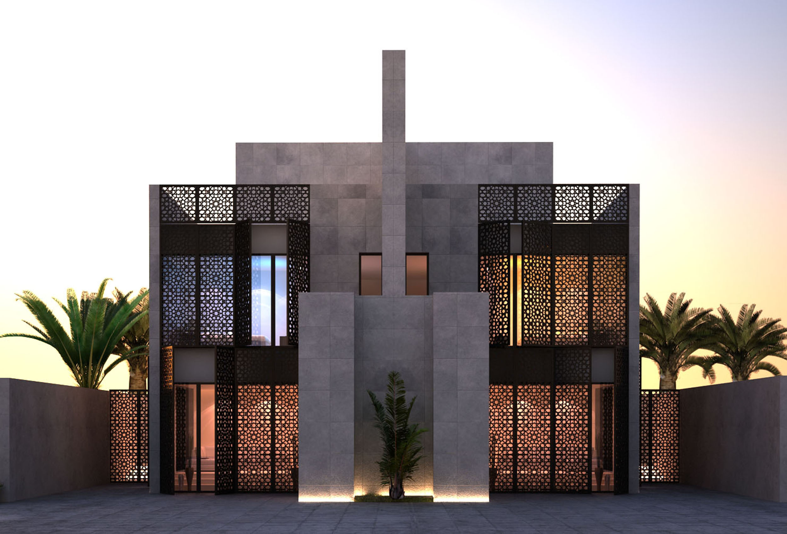

Why Royal Builders

Beginning of our project is beginning of your habitation and happiness.
Our procedural steps from the stage of planning to completion are designed in a perfect and systematic mode and it is followed strictly by all sections of our staff.
Our progressive course of action begins, continues and concludes with formal practice but exceptional care.
Formal practice
» CMDA / Corporation/ Municipality approval
» Soil testing
» Construction
» Exterior and Interior infrastructure, Fittings & Accessories
Informal care
» Every step of authentication from the corporate bureau to local bodies.
» Beyond the normal practice with forethought and future sensing.
» Acquirement of superlative quality materials from brick to tiles and from sanitary to electrical components. Highly capable work process like plumbing, electrical fittings, carpentry work, weathering course, outsourcing, plastering, tiling and painting.
» A step ahead in every aspect: Modular switches, Finolex cables, Beton Tiles, Teak wood, PVC pipes and TMT bars are used. Thermal (puff) weathering, Percolation pits Rain Water Harvesting, Earthquake resistance construction up to Richter scale are other such value additions.
We are all-equipped. Our schedules are updated. Our technical and mechanical apparatus unit is comprehensive in every aspect.
The prime factor is the elevation. We see to it that our buildings look gorgeous. Its the external vibes that tempt one to enter in and survey the interior features.
Each of our projects has predominantly converted the surroundings to considerable extent. The zone, wherever our buildings do exist, is transformed to appreciable levels by gaining a genteel look.
We follow up constantly to undertake maintenance after sales. Preservation and refurbishing activities of any kind will be attended to, by our engineers and other staff on your request at any time, immediately.
Our buildings are invariably secular. We respect spiritual emotions and sensitivity. Every zone of Royal Builders adopts and enjoys communal harmony. Oneness is one among our various avowed principles.
Our Services Include
» Promotion and construction of multi-storeyed RCC structures.
» Elegant designing and decoration on interiors.
» Designing and detailing of multi-storeyed buildings.
» Construction of commercial complexes.